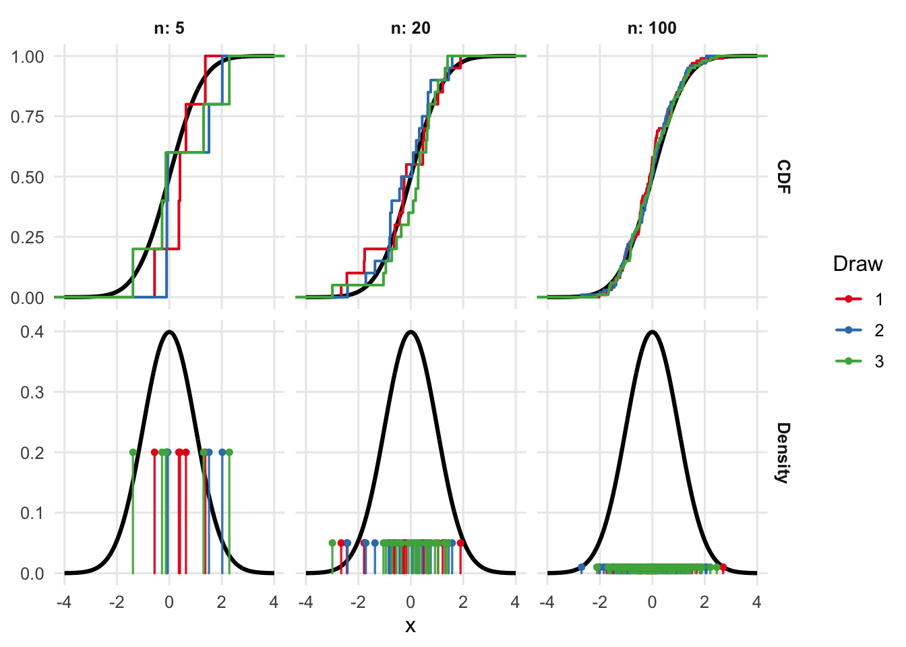
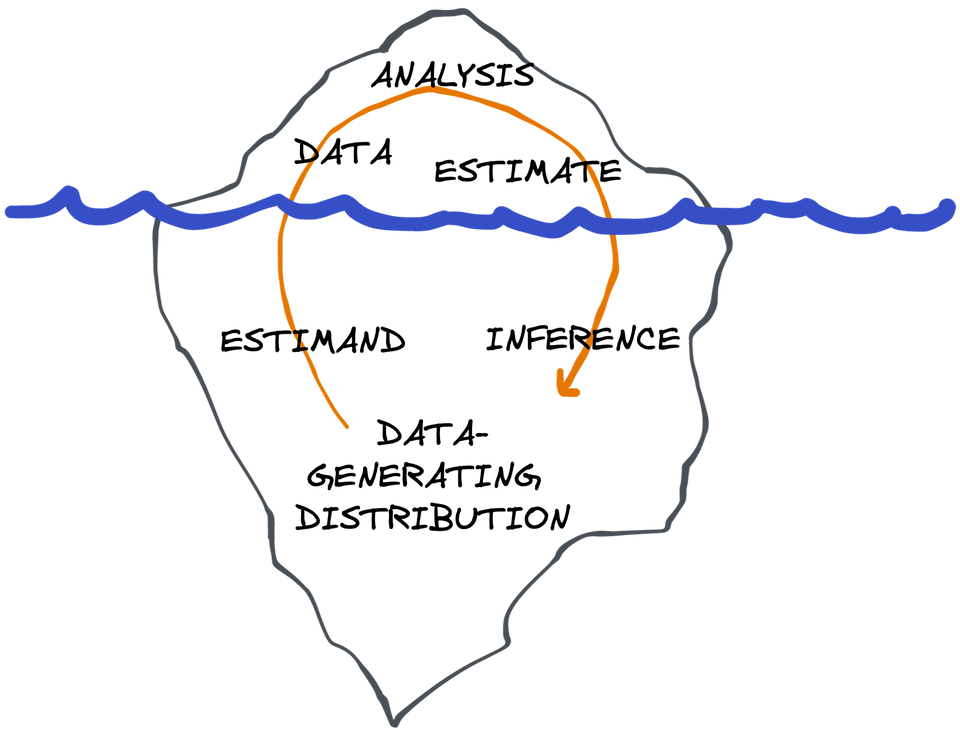
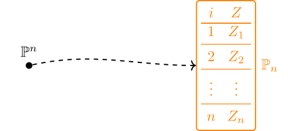
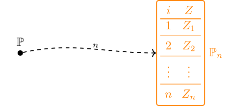
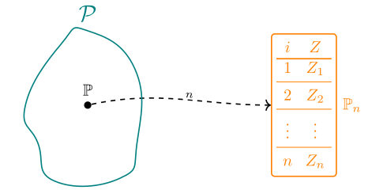
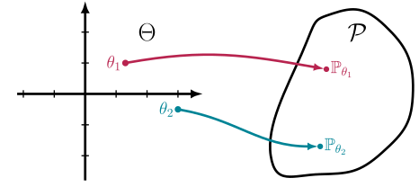
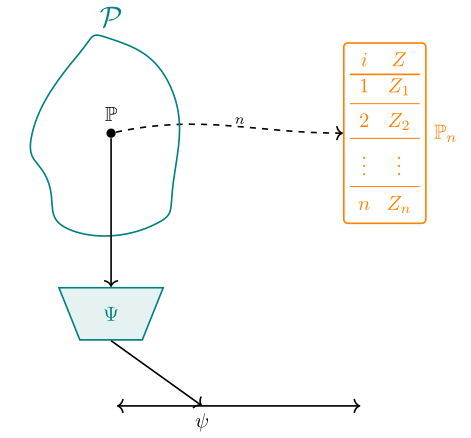
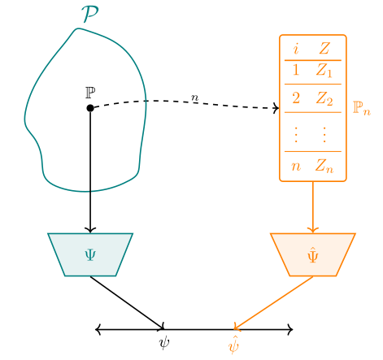
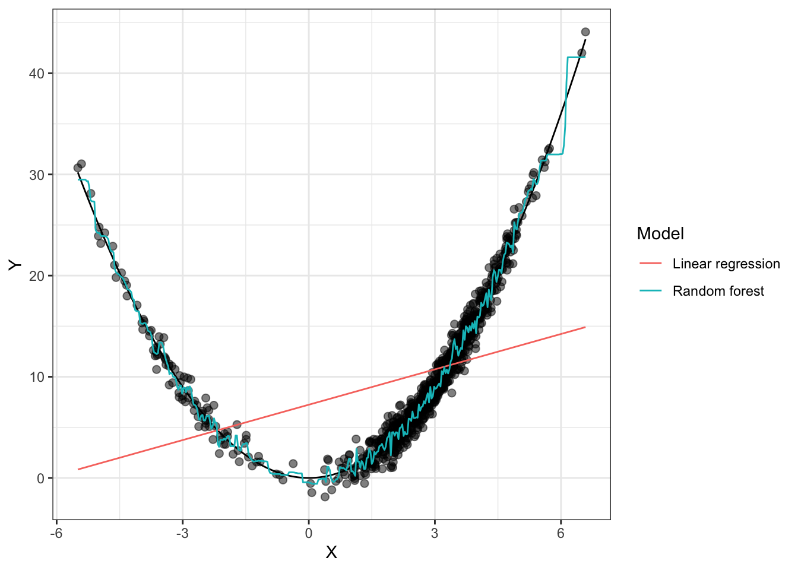
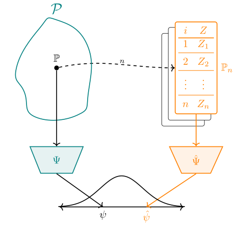

1 Estimation Problems
The purpose of statistics is to help make decisions based on our observations in the real world. Should we enact rent control? Who should more carefully control their blood pressure? When should we plant crops to maximize yield? All of these are examples of questions where decisions need to be made and can be informed by observations. Statistics comes in when we know that the same or similar experiments, if repeated, would yield different results due to chance variation in the observations (or, from a Bayesian perspective, when those observations incrementally shift the degree to which we believe something). The vast majority of important real-world questions involve some degree of variability. In this sense, statistics is one of the most important stewards of the scientific process. Surprisingly, however, many traditional courses in statistics do not introduce the “big picture” perspective that I’ll lay out here, which is why I feel compelled to include it even though some readers will be familiar with some or all of these concepts.
To answer a question, or make a decision, we usually would like to know a particular number or set of numbers that are “fundamental” to the world but practically or theoretically unobservable. For example, to facilitate vaccine production, we may want to know how many people have the flu. Or, to decide who to market a movie to, we’d like to know what percentage of each market segment would pay to see the film if shown an ad vs. if not. We imagine that these are fixed, but unknown, quantities. We may have access to some sample of people who are either sick or not, or we may have access to a focus group of movie-goers, but what can these observations tell us about the broader populations (or counterfactual populations) we’re interested in? How does that depend on what we assume to begin with? That is the question that we attempt to formalize and address in the study of statistics. Before proceeding to the specifics of causal inference, we’ll first address the fundamentals of estimation problems writ large.
Not defining a clear question or set of assumptions is by far the largest source of catastrophic errors in any data analysis. No matter what you do with the data, if you didn’t have a clear question to begin with, whatever answer you’ve arrived at is completely meaningless. You’ll often see analyses that start with “we took the data and did linear regression; here we report the coefficients and confidence intervals”. Without specifying a concrete goal, how can we judge what these coefficients are supposed to mean? Without a clear description of modeling assumptions, how can we know that the confidence intervals actually have their promised level of coverage? You could have infinite data and still get it all wrong. Leaving questions and assumptions implicit causes confusion.
Of course, it’s not always easy to pin down a good question and clarify assumptions. Most of the time, domain experts actually have a large swath of vague, interlocking questions: it’s part of the statistician’s job to help wrangle these down to something concrete and propose or verify sets of tenable assumptions. That’s why you need a good understanding of the formal objects we’ll define in this chapter so you can help tie them to the real world.
You can think of this as an iceberg: you get to see the data, what you do with it, and the results. These are all things you can see and “touch” (at least in a computer program). But that’s only the tip of the iceberg, the 10% above the waterline. Under the surface, you need to have an imagined space of data-generating distributions (different plausible versions of “the real world”), functions that act on these distributions to reveal their true properties (i.e. definitions of “the answer” in each “world”), and an infinite number of repetitions of the statistical processes that generated the data (to allow for a quantification of uncertainty). That’s the 90% of the iceberg that remains submerged; imaginary. Outside of simulations, you can’t ever touch these things. It’s your job to know they are there. The tip of the iceberg can’t exist, or at least doesn’t mean anything useful, without the hidden mass below.

1.1 Data and Distributions
To make progress on this front we have to formalize some ideas. We’ll start with what we actually observe in a study: the data. For the purposes of this book, we’ll stick to “tabular” data and presume that our data looks something like this:
| \(i\) | \(W\) | \(X\) | \(\dots\) | \(Y\) |
|---|---|---|---|---|
| \(1\) | \(W_1\) | \(X_1\) | \(\dots\) | \(Y_1\) |
| \(2\) | \(W_2\) | \(X_2\) | \(\dots\) | \(Y_2\) |
| … | ||||
| \(n\) | \(W_n\) | \(X_n\) | \(\dots\) | \(Y_n\) |
The variables \(X\), \(W\), \(Y\), or whatever other symbols we choose to use, represent the different kinds of measurements we take in the study, and the indices \(i\) represent the different units of observation. Therefore \(X_i\) represents the value of variable \(X\) for observation \(i\). For example, if we were interested in the effect of a drug, the different observations might correspond to different patients, \(W\) their ages, \(X\) whether or not they took the drug, and \(Y\) some measure of their health afterwards. We presume that all of these values are numbers and I’ll usually use calligraphic letters to denote their domains, e.g., \(\mathcal X\) is the domain of \(X\). These domains are always subsets of the reals \(\mathbb{R}\) - categorical and binary variables are represented with sets of integers and \(\{0,1\}\), respectively. Generally I’ll let \(Z_i\) denote the tuple of all the different measurements for a particular observation \(i\) (e.g., \(Z_i = (X_i,W_i,Y_i)\)) and if I write \(Z\) without the subscript I’m referring to a generic or arbitrary observation.
In statistics we imagine that the data are a draw from an unknown distribution \({\mathbb{P}}^n\) over all \(n\) variables \(Z_1 \dots Z_n\) that generates the dataset. We’ll use blackboard boldface notation \({\mathbb{P}}\) to denote distributions. A distribution of a random variable \(Z\) assigns a probability value in \([0,1]\) to subsets of the \(\mathcal Z\), the domain of \(Z\). As is usual, I’ll use capital letters like \(Z\) to refer to random variables and small letters like \(z\) to refer to particular fixed values. I’ll use the curly-brace notation \({\mathbb{P}}\{\mathcal S\}\) or \({\mathbb{P}}\{Z \in \mathcal S\}\) to indicate the probability of a set \(\mathcal S \subset \mathcal Z\). In a mild and ubiquitous abuse of notation I’ll also write \({\mathbb{P}}\{Z \le z\}\), etc. to denote what should formally and tediously be written as \({\mathbb{P}}\{ \{ z' \in \mathcal Z: z' \le z \} \}\).

All distributions have an associated cumulative distribution function \(z \mapsto {\mathbb{P}}\{Z \le z\}\) that uniquely identifies them. Although not all distributions have standard density functions (with respect to Lebesgue measure), it is sometimes helpful imagine a (multivariate) density function \(p(z)\) as the representation of a distribution. This can help facilitate your reasoning. Throughout the book I’ll use lowercase \(p\) to denote the density of a distribution \({\mathbb{P}}\).
When necessary, I’ll use parentheses to indicate marginal or conditional distributions like \({\mathbb{P}}(X)\) or \({\mathbb{P}}(Y|X=x)\) under a joint distribution \({\mathbb{P}}(Y,X)\). Because when we write \({\mathbb{P}}\{Y < y| X=x\}\), etc. it is obvious what distribution we’re referring to, we only need to write the parenthetical random variables when we are referring to those distributions as objects in and of themselves, not when we are applying them to find the probability of particular sets.
1.1.1 The Fiction of Probability
Before going any further, I want to underscore what I said above about imagining that data are drawn from a distribution. In the frequentist view, a dataset is a single instantiation of what could have happened under repetitions of a given experiment or physical process. Repeat the experiment, get a different dataset. The probability distribution of the data represents the accumulated patterns of the data over infinite repetitions of the experiment. A probability statement like \({\mathbb{P}}\{Z > 0\} = 1/2\) means that \(Z\) (whatever that is) comes out to be positive in exactly half of the repetitions of the experiment.
Obviously this is a fiction. Very rarely, if ever, can experiments be exactly replicated. If they cannot be replicated, in what sense can we give meaning to the “distribution” of the data? Indeed, a random number generator fundamentally has nothing to do with the physical, biological, or social processes by which numbers end up appearing in a spreadsheet.
There are many other ways in which probability models are commonly abused that go beyond frequentist interpretation. For example, it’s ubiquitous to model the age of people in some population as having a continuous distribution. But, in fact, in any given population of humans there are only a finite number of people, meaning that the true distribution (or anyone’s prior belief about it) must in fact be discrete. At best the population would be countably infinite if one imagines that humanity will last forever (and this begs the question of at what point in the past you consider various hominids to be “human”).
To that point, the definition of any variable in a probability distribution is always contingent on social constructions: if we say \(Z_i=1\) when individual \(i\) has brown eyes, what do we mean by that? At what shade do we establish a boundary? How do we label people who have no eyes? What about heterochromia? None of these questions have unambiguous, objective answers. While we can often come common-sense consensus definitions, we need to acknoweldge that they are exactly that: implicit social agreements that are deemed useful in a given time and place and which can always be renegotiated. The same caveats apply to any mathematical model – we need to stay aware of this to avoid becoming deluded by our own imaginary worlds.
I hope I have convinced you that a probability distribution is a simulacrum of what is actually happening in the real world: a convenient way to smooth over things which we do not really understand while maintaining a transparent, shared vocabulary. Probability writ large and frequentist probability in particular are shared lies. They are not “real” in any meaningful way, and the seams become all-too apparent if you look closely.
Nonetheless, the frequentist probability framework is extremely useful! As humans, we are entirely in the business of fabricating social fictions and operating by them. We have no problem making good use of invented abstractions. Numbers themselves are mythical. Certainly you can have two apples or two pencils, but “two” is not real (and neither is an apple - you cannot cleanly define such a thing without social context). Like apples, the number two, and the “laws” of physics, frequentist probability is extremely useful despite not being real.
This is roughly the fictionalist stance in the sense of Vaihinger and Rosenthal (2021) or Balaguer (2008): mathematical models should be treated as useful “as-if” fictions chosen for empirical adequacy and transparent communication, not as literal features of the world. If we didn’t have mathematical models, and frequentist probability models in particular, there is no way humans could have gone to the moon, erradicated polio, or created large language models. We can choose to behave as if our models are real because they are often (though not always) good enough for creating things that satisfy us in the real world.
For completeness I should note that subjectivist Bayesian probability gives an account of probability that to me is much more plausible. In that framework, probability reflects a personal degree of belief (Joyce 2011). I don’t want to spend too much time on the details here but roughly speaking my perspective is that Bayesian probability, while philosophically a bit more satisfying, is practically more challenging and socially less valuable than the frequentist framework because priors are difficult to agree on and because Bayesian nonparametrics are very unwieldy. Many people would vehemently disagree with me on that, but empirically it appears to be true: frequentist probability is far more popular in the wild. And, ultimately, subjective Bayesian probability is also a myth in the same sense as any other mathematics: it just buries its lies a bit deeper than the frequentist framework. The fact that there are entire textbooks devoted to the philosophy of probability (e.g., Weatherford (2022)) should be enough to convince you that no approach is entirely salvageable or coherent. This is no way an impediment to scientific progress.
1.1.2 Independent Observations
For the purposes of this book we will only consider distributions where the different observations \(i \in \{1 \dots n\}\) are considered independent and identically distributed (IID). That is, where joint probabilities factor as \({\mathbb{P}}(Z_i, Z_j) = {\mathbb{P}}(Z_i) {\mathbb{P}}(Z_j)\) for \(i\ne j\). That is why I used the suggestive notation \({\mathbb{P}}^n\) to indicate the distribution of the the entire dataset above: \({\mathbb{P}}\) indicates the distribution of a single, generic observation and \({\mathbb{P}}^n\) indicates the distribution of the entire dataset which, by independence, is simply the product of the \(n\) identical per-observation distributions.

Independence and interchangeability of observations is a strong assumption: to assess it, you can imagine repeating your “experiment” or data-generating process many, many times to gather different datasets of the same size as the one you observe. If you take the first row \(Z_1\) from each of these datasets and subset to those datasets where \(Z_2 = z_2\) (or another condition), the distribution of \(Z_1\) in that subset should be the same as it is across the entire collection of datasets.
Example 1.1 Let’s say \(Z_i\) are binary indicators of whether a person \(i\) has the flu or not. Imagine first an experiment where on January 1st of 2025 we sample 100 random people in Berkeley, California and test them for flu. Repeating this experiment would require time travel, but in this setup the observations \(Z_1\) and \(Z_2\) would be essentially independent (modulo the fact that Berkeley has a finite population; we can sensibly ignore this since it is large relative to the sample size). The only randomness comes from who we sample, and sampling one person does not make it more or less likely that the rest of the sample is sick or healthy.
In contrast, consider a version of the “experiment” where we first pick a random day in 2025, and then pick 100 random people in Berkeley. In this setup, knowing that one person is sick in our dataset actually gives us a lot of information about the others. The reason is simple. If we look at person 1 and see they have the flu, that makes it more likely that our sample was taken during flu season and therefore it’s more likely that other have the flu too. Or, explained more literally, if we subset to all the datasets where person 1 has the flu, more of those will have been taken in flu season and therefore the distribution of \(Z_2\) in those datasets will be tilted towards 1 more than the general distribution of \(Z_2\).
Statistics has nothing to say about which version of the experiment is the correct one. A dataset of 100 flu tests from Berkeley is equally compatible with all three hypothetical experiments. There is not a mathematically wrong answer in terms of determining whether the observations are independent, even though that assumption impacts the analysis and interpretation of the data.
While we may never actually repeat any version of our experiment, it’s certainly more plausible to imagine a similar experiment in a different city or in a different time as “repetition” of our experiment than it is to go back in time. The result of our analysis has more social utility if we interpret the data as coming from the random-time or random-city experiments, and therefore this is the more sensible choice. Therefore, in this context, we should often treat \(Z_1\) and \(Z_2\) as dependent rather than independent.
In Example 1.1, the dependence arises because the flu is a contagious disease that clusters temporally and geographically. In many other cases, independence is a more reasonable assumption. For the remainder of this book we will assume IID data, partly because this covers a large number of practical applications and partly because it simplifies things in a way that is useful for learning. Similar ideas apply in non-IID settings, but it is easier to understand that theory after covering the IID case.
When the data are assumed IID, taking a dataset of size \(n\) from a distribution is equivalent to sampling \(n\) times with replacement from some (possibly infinite) “population” of possible rows of data. I often find it helpful to reason in terms of a very large, yet finite population, i.e., a data table very similar to the one shown above, but with a huge number of rows \(n^*\). In that case, the joint probability distribution \({\mathbb{P}}\) is nothing more than the joint histogram of that population dataset. In fact, you can even think of the \({\mathbb{P}}\) as standing for “\({\mathbb{P}}\text{opulation}\)”.
In a large, finite population, evaluating a probability like \({\mathbb{P}}\{X>5\}\) reduces to counting the number of rows that satisfy the condition \(X > 5\) in that dataset and dividing by \(n^*\). Similarly, \({\mathbb{P}}\{X>5|Y=2\} = \frac{\#\{X>5, Y=2\}}{\#\{Y=2\}}\), the number of rows where \(X > 5\) among those with \(Y=2\). All of the standard rules and theorems of probability (Bayes’ Theorem, total expectation, etc.) are easy to derive intuitively in this setting.
1.2 Models
We presume that data are drawn from some distribution, but we do not pretend to know what that distribution actually is. However, we may know something at least about some aspects of the distribution.
Example 1.2 Let’s say \(Z_i\) represents someone’s age in a random sample from a population of interest and that is all we are told. We model \(Z_i \overset{\text{IID}}\sim {\mathbb{P}}\) with \({\mathbb{P}}\) unknown. However, since \(Z\) represents age, we actually already know that \({\mathbb{P}}\{Z \ge 0\} = 1\). Note that other aspects of the distribution may still be unknown: we certainly don’t know if there are more children than adults, what the mean age is, etc. If we are somewhat more ambitious, however, we may also be comfortable assuming \({\mathbb{P}}\{Z \le 200\} = 1\) or some other large age depending on the population of interest, since, to my knowledge, nobody has ever lived that long!
Example 1.3 (Randomized Trial) Presume that we collect data from a simple randomized trial. In a randomized trial, participants \(i\) are recruited from a population of interest. Usually some measurements (age, sex, disease state) are taken at baseline. We’ll call these the covariates and denote them with \(X_i\) for each participant. Once they are enrolled, participants are randomized by a fair 50/50 coin flip to receive either an experimental treatment (e.g., a drug) or placebo (alternatively, some standard-of-care treatment). We use \(A_i \in \{0,1\}\) to denote whether or not the participant was in the treatment arm (\(A=1\)) or control \((A=0)\). After some time elapses for each participant, an outcome \(Y_i\) (e.g., disease state) is measured for each person.
For IID observations, we have \((Y,A,X)_i \overset{\text{IID}}\sim {\mathbb{P}}\) for some distribution \({\mathbb{P}}\). While \({\mathbb{P}}\) is unknown, we actually do know something about it. Namely, \({\mathbb{P}}(A=1|X) = 1/2\). This is not an assumption: since the trial was randomized, we know this for a fact!
Since the randomization happens individually for each person, we know the conditioning on \(X\) is appropriate: the population distribution of the treatment will be 50/50 in any stratum of the covariates \(X=x\). That’s why we know \({\mathbb{P}}\{A=1|X\} = 1/2\) and not just the weaker statement \({\mathbb{P}}\{A=1\} = 1/2\). The latter would just imply that half of the people in the population get treated, but that could easily happen if, e.g., we treat all women and don’t treat all men.
As the examples show, there is often some knowledge about the distribution: at a minimum, we usually know the domains of the different variables. A statistical model is a tool to formalize these pieces of knowledge.
The definition of a model is extremely simple, but leads to incredibly rich ideas (see, e.g., McCullagh (2002)). The utility comes when we define models that align with our knowledge or suppositions so that the model formalizes what we believe about the world. If the model reflects reality in this way, then the true data-generating distribution \({\mathbb{P}}\) is an element of the model, i.e., \({\mathbb{P}}\in {\mathcal{P}}\). The problem of statistics, in its most ambitious form, is to try and deduce which element of \({\mathcal{P}}\) is the data-generating distribution based on an observed dataset sampled from that distribution.
Since we’ll assume IID data throughout this book, we won’t write that as a restriction on the model. That is, instead of specifying the set of data distributions \({\mathbb{P}}^n\), we’ll just specify the set of distributions \({\mathbb{P}}\) possible for a generic, individual observation. The latter model on individual observations induces the former model on datasets, i.e., \({\mathcal{P}}^n = \{{\mathbb{P}}^n : {\mathbb{P}}\in {\mathcal{P}}\}\).

Example 1.4 (Randomized Trial) In Example 1.3 above we discussed randomized trials and concluded that \({\mathbb{P}}(A|X)\) is known in such situations. Therefore an appropriate model to use in a randomized trial setting is
\[ {\mathcal{P}}= \{{\mathbb{P}}: {\mathbb{P}}\{A=1|X\}=1/2\} \]
Example 1.5 (Linear Regression with Normal Errors) In settings where a vector of predictors \(X \in \mathbb{R}^d\) and an outcome \(Y \in \mathbb{R}\) are observed for each observation, it is sometimes mathematically convenient to assume that the conditional expectation (“regression function”) of the outcome is a linear function of \(X\) and that the outcome is determined by adding Gaussian noise to this function. Therefore, the linear regression model (with normal errors) is
\[ \begin{aligned} {\mathcal{P}}(Y|X) &= \left\{ \mathsf{N}(X^\top\beta, \sigma^2) : \beta \in \mathbb{R}^d, \sigma^2 > 0 \right\} \\ {\mathcal{P}}(X) &= \left\{ \text{any distribution ${\mathbb{P}}(X)$} \right\} \\ {\mathcal{P}}&= \left\{ {\mathbb{P}}(Y|X) {\mathbb{P}}(X): {\mathbb{P}}(Y|X) \in {\mathcal{P}}(Y|X), {\mathbb{P}}(X) \in {\mathcal{P}}(X) \right\} \end{aligned} \]
Models are rarely written out explicitly as sets as you see in the display above. You will more often see this regression model written as
\[ \begin{aligned} Y = X^\top \beta + \mathsf{N}(0,\sigma^2) \end{aligned} \]
where the domain of the parameters \(\beta\) and \(\sigma^2\) is implicit, and since no restriction is placed on \(X\) it is allowed to have any marginal distribution. This is a much more concise way of writing things but you should remember that this little “equation” actually represents an entire set of joint distributions.
Unfortunately, using the term “model” for a set of distributions (one of which is the “real” one) somewhat conflicts with the way “model” is often used colloquially. In the language of statistical theory, the linear regression model is the set described in Example 1.5. But often people will refer to a linear regression model \(Y = X^\top \hat\beta + \mathsf{N}(0,1)\) for some fixed value of \(\hat\beta\), referring to the result of “fitting” the model. The former use refers to a set of distributions while the latter refers to a specific distribution in this set. In the language we will develop shortly, something like \(Y = X^\top \hat\beta + \mathsf{N}(0,1)\) would be called an estimate of the conditional distribution, rather than a model for it.
Since models are sets, they can certainly be compared in terms of sub- and super-sets. The randomized trial model in Example 1.4 is a subset of a “larger” model where nothing is assumed about \({\mathbb{P}}(A|X)\), and a superset of a model where the covariate distribution \({\mathbb{P}}(X)\) is also known. We often use language like this informally, saying that certain models are relatively large and others are relatively small.
1.2.1 Parametrized Models
Another way to measure the size of the model is to count how many parameters it takes to parametrize it.

The classical linear regression model in Example 1.5 is an example of a parametric model that has \(d + 1\) parameters (\(d\) for the components of the coefficient vector \(\beta\) plus one for \(\sigma^2\)). Forcing one of the coefficients to be zero (equivalent to omitting a predictor) would result in a model with one fewer dimension.
Nonparametric models can also (confusingly) be parametrized - just not with a finite-dimensional parameter. For example, the set of all distributions that have continuous densities can be parametrized by those densities themselves: we could write a mapping \(p \to {\mathbb{P}}_p\) from densities to the corresponding distributions. But, of course, the set of density functions \(p\) is not a finite-dimensional space. “Finite-dimensional” is therefore a clearer descriptor than “parametric”, but we’re stuck with the terms we have.
Sometimes a nonparametric model is parametrized partly with finite-dimensional parameter and partly with an infinite dimensional parameter. Such models are usually called semiparametric, but formally they are one kind of nonparametric model, or specifically one way of writing a nonparametric model. Any nonparametric model can be parametrized to make it semiparametric in terms of some parameters.
Example 1.6 Presume that we measure a continuous variable \(Z\) which, for some reason, we know should have a symmetric distribution around its mean. This might be a reasonable assumption when taking noisy measurements of a physical system. One way to formalize this is to assume the model
\[ \begin{aligned} Z &= \mu + W \\ p(w) &= p(-w). \end{aligned} \]
The second line enforces the fact that the noise \(W\) has zero mean and a symmetric distribution around zero.
This is a semi-parametric model parametrized by \((\mu, p(w))\). The first parameter is a scalar, but the second is a function. Overall the model is nonparametric, but in this parametrization we’ve isolated some feature of the distributions in the model as a finite-dimensional parameter.
Parametric and semiparametric models can always be parametrized in different ways. For example, the set of all normal distributions can be parametrized with the mean \(\mu\) and the standard deviation \(\sigma\) (as usual), or it can be parametrized with the natural parameters of the exponential family (it doesn’t matter if you don’t know what that is) which are \(\theta_1 = \mu/\sigma^2\) and \(\theta_2 = -1/(2\sigma^2)\). The mappings \((\mu, \sigma) \mapsto {\mathbb{P}}_{\mu, \sigma}\) and \((\theta_1, \theta_2) \mapsto {\mathbb{P}}_{\theta_1, \theta_2}\) are essentially two different naming or labeling conventions for the same set of distributions, in this case normals. It’s important to remember that the model (set of distributions) exists independently from any parametrization (naming scheme).
Parametrizations are most useful if different parameter values actually result in different distributions. When this is the case, we say the model is identifiable, although strictly speaking we should say the parametrization is identifiable. We’ll follow convention and say a “model” is identifiable since models are often defined in terms of a single, obvious parametrization, but you should know that this language is a bit inaccurate.
If a parametric or semiparametric model is identifiable, it means that we can figure out the value of the parameter \(\theta\) if we are given infinite data. The reason for this is that infinite data allows us to figure out what distribution \({\mathbb{P}}\) generated that data, which in turn gives us \(\theta\) if there is only one unique parameter value that corresponds to that distribution. It’s a bad situation to be in if you have a parametrization where \(\theta_1\) and \(\theta_2\) are two different parameters that have different scientific interpretations but which end up generating exactly the same data. There is simply no way to tell the two apart, even in the best-case, infinite-data scenario.
Identifiability can seem quite obvious and its easy to take it for granted, but there are many non-identifiable parametrizations.
Example 1.7 Consider the linear regression model described in Example 1.5. The way the model is written in that example is in terms of the parametrization \((\beta, \sigma^2, {\mathbb{P}}(X)) \mapsto {\mathbb{P}}_{\beta,\sigma^2, {\mathbb{P}}(X)}\) where \({\mathbb{P}}(X)\) is the CDF or \(X\) (an function-valued parameter). As-is, this model is not identifiable. To show that, all we need to do is find two different parameter values that result in the same distribution.
For simplicity, we’ll take the dimension of \(X\) and \(\beta\) to be \(d=2\). Consider any distribution \({\mathbb{P}}(X)\) where \(X_1 = X_2\) and take \(\sigma^2 =1\). We’ll contrast two parameter values that have the same values for \({\mathbb{P}}(X)\) and \(\sigma^2\) but different values for \(\beta = [\beta_1, \beta_2]\). Specifically, consider \(\bar\beta = [1,0]\) and \(\tilde\beta = [0,1]\). What we will show is that \({\mathbb{P}}_{\bar\beta,\sigma^2, {\mathbb{P}}(X)} = {\mathbb{P}}_{\tilde\beta, \sigma^2, {\mathbb{P}}(X)}\).
When \(d=2\), the distribution of \(Y|X\) follows
\[ Y = X_1 \beta_1 + X_2 \beta_2 + \mathsf{N}(0,\sigma^2). \]
But since we have set \(\sigma^2 =1\) and \({\mathbb{P}}(X)\) such that \(X_1 = X_2\) for the two parameter values we’re comparing, the distribution of \(Y|X\) for these two distributions is
\[ Y = X_1 (\beta_1 + \beta_2) + \mathsf{N}(0,1), \]
which is the same for any \(\beta\) such that \(\beta_1 + \beta_2\) is constant, as is the case for our candidate values \(\bar\beta\) and a \(\tilde\beta\) . Thus \({\mathbb{P}}_{\bar\beta,\sigma^2, {\mathbb{P}}(X)} = {\mathbb{P}}_{\tilde\beta, \sigma^2, {\mathbb{P}}(X)}\) and the model is not identifiable.
The symbols add more complexity than is warranted here. The basic idea is that when two predictors are identical, there are an infinite number of ways to make a linear combination out of them that results in the same outcome. This is an elementary fact about the linear model: there is no unique solution when the predictors are exactly co-linear. This fact is usually presented when discussing estimation of the linear model from a finite sample, but the identification result here is the equivalent when there is infinite data. There is no way of distinguishing \(\bar\beta = [1,0]\) and \(\tilde\beta = [0,1]\) if \(X_1 = X_2\).
A common way to deal with non-identifiable models is to further restrict them (shrink them a bit) to rule out the offending or conflicting parameter values. For example, the linear regression model becomes identifiable if we further specify that the distribution of \(X\) is such that \(\mathbb{E}[XX^\top]\) is invertible, i.e., that none of the predictors is an exact linear combination of any others. It’s important to realize that this is an additional assumption that must be made, and the situation is similar in other models where additional assumptions are required for identifiability. We’ll see the same ideas repeated when we talk about causal identification in the next chapter.
Part of the appeal of parametrized (parametric or semiparametric) models is that they can be made to feel narrative or mechanistic. When you think of a linear regression model, it’s easy to imagine that nature first generates some predictor variables, then multiplies them by some coefficients and adds noise to obtain the outcome. But really this is adding a lot more to the model than is really there. A data-generating distribution has no such concept of time or ordering or procedure: it simply describes observable patterns of occurence and co-occurence between variables. Mechanistic thinking is a very useful tool, but it can rub up against the formalism of probability (which is devoid of mechanisms) and give the wrong intuition. This is a big part of the problem with naive probabilistic notions of causality and it’s exactly what we’ll try to address in the next chapter.
1.2.2 Choosing a Model
In a given statistical problem, there is rarely a single “correct” model to think in terms of. However, the general principle is that one should work with the smallest-possible tractable model that reasonably contains the true data-generating distribution. Since that distribution is never known, this principle essentially means that you should only make assumptions that you are near-certain of. A lot of the time that means working with nonparametric models like the set of all probability distributions, and there is nothing wrong with that! In this book we won’t shy away from the complexity of the real world and we will see that the methods we come up with are often not any more complicated from a user’s perspective.
Statisticians often like to hide behind the famous George Box maxim “all models are wrong, but some are useful” when they use low-dimensional parametric models like linear regression without justification. In absolute terms, I agree with the quote: it’s very much in line with the instrumentalist-fictionalist perspective on frequentist probability as a whole. Where I disagree is in the way the quote is abused. An incorrect model is certainly not useful when it produces answers that are entirely wrong! In a relative sense, there are important degrees of incorrectness that should not be washed away without argument by appealing to a pithy quote.
In some cases it is justifiable to use models that are patently wrong, but only if the rationale is clearly explained (we’ll see an example later in the book). Usually this occurs when the incorrectness of the model don’t actually matter to the specific problem at hand. When we do this we are careful to call the model a working model to indicate that we do not actually believe the model restrictions reflect plausible assumptions about the real world.
1.3 Estimands
We’ve filled the role of a data-generating process (or “reality”) with an unknown probability distribution \({\mathbb{P}}\). For example, we might imagine that each person’s income in some country is a random variable. We’ve also represented our existing knowledge about the unknown distribution using the model \({\mathcal{P}}\). Now we need to fill the role of our scientific quantity of interest; i.e., we must explain how to translate a question like “what is a usual income?” into the language of probability. That is the purpose of an estimand.
Framing the estimand as a function makes a lot of sense: the “true” value that we are trying to estimate depends on what the underlying data-generating distribution is!

In traditional (parametric) statistics, the same problem is addressed by making one or more parameters \(\theta\) the object(s) of interest. Certainly in any parametrized model we might think to define an estimand \(\Psi({\mathbb{P}}_\theta) = \theta\), but when the data-generating distribution is no longer in the parametric model, this definition has no meaning. Thinking of estimands first and foremost as mappings that extract generic properties of a distribution solves the problem. In this way we can formalize the scientific question of interest before we even pin down a model, parametric or otherwise.
The other, more subtle problem with defining \(\Psi({\mathbb{P}}_\theta) = \theta\) is that this is not a well-defined function unless the parametrization is identifiable (Definition 1.3)! By writing \(\Psi({\mathbb{P}}_\theta) = \theta\) we necessarily imply that \(\Psi\) is the inverse mapping of \(\theta \mapsto {\mathbb{P}}_\theta\), a mapping that only exists if the model is identifiable. In general, there may be two or more parameter values that yield the same distribution.
Thinking of an estimand as a function \(\Psi({\mathbb{P}})\) with no reference to a parametrization makes the technical question of identification irrelevant but at the same time brings the scientific question of the utility of the data to the forefront. If we can’t clearly express the answer to our scientific question as a function of the data-generating distribution, we immediately know that we’re collecting the wrong data or conducting the wrong experiment. On the other hand, it’s easy to hide such a deficiency in a parametrized model because sometimes it’s tricky to see that the parametrization is not identifiable without further assumptions!
What I call an estimand is often called a parameter throughout the statistics literature, or more specifically a target parameter. That term makes sense since finite-dimensional parameters are one extractable aspect of a distribution in a parametric model and the definition of an estimand generalizes this idea. Statistical functional is another term that is sometimes used. I prefer the term estimand, however, because it clearly communicates that it is what we are going to estimate. To me, it sounds less abstract and more approachable than “target parameter” or “statistical functional”. It also makes a clean break with the “parameters” of parametric models and therefore avoids confusion. Lastly, the term “estimand” is gaining popularity in regulatory agencies and in clinical trials, perhaps also because it clearly evokes what it means (Kahan et al. 2024).
Example 1.8 (Mean) Presume we have a continuous random variable \(Z\) (i.e., with a density function) with an unknown distribution \({\mathbb{P}}\). The mean of \(Z\) is a common estimand defined by
\[ \Psi({\mathbb{P}}) = \mathbb{E}_{\mathbb{P}}[Z] = \int z\ p(z) \mathop{}\!\mathrm{d}z \]
Different distributions have different means. If the mean estimand were evaluated at \({\mathbb{P}}= \mathsf{N}(0,1)\), the result would be 0. If it were evaluated at \({\mathbb{P}}= \mathsf{Unif}(1,2)\), the result would be \(1.5\).
Our definition of the mean estimand is more general than an alternative definition that could work in a parametric model. For example, if the model were \({\mathcal{P}}= \{\mathsf{N}(\mu,1):\mu \in \mathbb{R}\}\), the estimand would traditionally be the parameter \(\mu\). But if the model were \({\mathcal{P}}= \{\mathsf{Unif}(a,b): a < b \in \mathbb{R}\}\), the estimand would be \((b-a) / 2\). By writing \(\Psi({\mathbb{P}}) = \mathbb{E}_{\mathbb{P}}[Z]\) we easily generalize both of these model-specific definitions.
Example 1.9 (Regression Coefficient) Let’s say we collect a scalar predictor \(X\) and outcome \(Y\) for each observation and we’re interested in what increase in the average outcome is associated on average with a one-unit increase in the predictor.
A traditional approach to this problem would be to suppose a linear regression model (e.g. Example 1.5). Under this model, \(Y = \mathsf{N}(\beta_0 + X\beta, \sigma^2)\) and a one-unit increase in \(X\) translates to an average increase in \(Y\) of \(\beta\) units. Therefore the estimand would be the parameter \(\beta\).
This approach completely falls apart if we are not willing to assume linearity. And why should we? The vast majority of physical, biological, or social processes are nonlinear in important regimes. To formulate this estimand as a function of a generic distribution, we can instead take
\[ \begin{aligned} \Psi({\mathbb{P}}) &= \mathbb{E}_{\mathbb{P}}\big[\mathbb{E}_{\mathbb{P}}[Y|X+1] - \mathbb{E}_{\mathbb{P}}[Y|X]\big] \\ &= \mathbb{E}_{\mathbb{P}}[\mu_{\mathbb{P}}(X+1) - \mu_{\mathbb{P}}(X)] . \end{aligned} \]
This is a literal interpretation of the question: “what increase in the average outcome is associated on average with a one-unit increase in the predictor”. We first extract the conditional mean function \(\mu_{\mathbb{P}}(x) = \mathbb{E}_{\mathbb{P}}[Y|X=x]\), which encodes the average outcome at any level of the predictor. We then compare that average outcome at each value \(x\) to the corresponding average outcome that we expect to observe if the predictor were augmented by one unit to \(x+1\). Lastly, we average those differences over the values of \(X\) taken in the population.
When the distribution of interest is in the linear model, this definition coincides exactly with the value of the parameter \(\beta\). But our construction makes it so much clearer what \(\beta\) actually represents scientifically.
Estimands can also be defined implicitly as values that satisfy or minimize/maximize a particular equation.
Example 1.10 (Median) Let \(Z\) be a scalar-valued random variable. The median of \(Z\) under a distribution \({\mathbb{P}}\) is
\[ \Psi({\mathbb{P}}) = \arg\inf_z \big\{z: {\mathbb{P}}\{Z \le z\} \ge 1/2 \big\}, \]
in other words, the smallest number such that half the probability mass is to the left of it. An equivalent formulation is to say the median of \(Z\) under \({\mathbb{P}}\) is the (smallest) minimizer of \(\mathbb{E}_{\mathbb{P}}|Z - z|\) in \(z\)
Estimands can be scalar (\(\Psi: {\mathcal{P}}\to \mathbb{R}\), like the examples above) or vector valued (\(\Psi: {\mathcal{P}}\to \mathbb{R}^d\)) or even function-valued (\(\Psi:{\mathcal{P}}\to \mathcal{L}_2\), for example). Fitting a regression function is an example of estimating a function-valued estimand. In this book we’ll deal only with scalar estimands because this reduces notational complexity and because most of the common estimands in causal inference are scalar. However, the methods we develop extend easily to vector estimands and even to some functional estimands in certain cases.
1.3.1 Notation for Expectation
In Example 1.9, we defined the estimand \(\mathbb{E}_{\mathbb{P}}[\mu_{\mathbb{P}}(X+1) - \mu_{\mathbb{P}}(X)]\). Many of the estimands we’ll be working with will look similar to this: expectations of some function, i.e. \(\Psi({\mathbb{P}}) = \mathbb{E}_{\mathbb{P}}[f(Z)]\). It quickly becomes cumbersome to write \(\mathbb{E}_{\mathbb{P}}[f(Z)]\) over and over again, so in this book we’ll often denote expectations of functions of random variables using the notation
\[ {\mathbb{P}}f = \mathbb{E}_{\mathbb{P}}[f(Z)] . \]
This is called empirical process notation for expectation because it originates in the literature on empirical process theory. We’ll learn a little about empirical processes later in the book but they’re not a big part of what we’ll discuss. Nonetheless, the notation by itself is quite neat so we will certainly borrow it.
The motivation this notation is fairly straightforward. Any expectation is always with respect to some distribution \({\mathbb{P}}\). Generally we leave The \({\mathbb{P}}\) subscript off, but in many situations it’s nice to have it there when we’re talking about a quantity that varies depending on \({\mathbb{P}}\). But when we do that, there’s really no point in all the notational clutter of \(\mathbb{E}_{\mathbb{P}}\) when we can simply write \({\mathbb{P}}\) and be done with it. Naturally this is an abuse of notation since \({\mathbb{P}}\{Z \in \mathcal Z\}\) measures the probability of a set, but we can easily disambiguate expectation from a probability statement because what comes to the right of the \({\mathbb{P}}\) will either be a set (for probability) or a function (for expectation). When needed, I’ll use square brackets to distinguish a probability statement \({\mathbb{P}}\{\cdot\}\) from an expectation \({\mathbb{P}}[\cdot]\) or to clarify exactly what is in the expectation. But, keeping in convention with the notation for linear operators (like matrix multiplication), we usually leave the brackets off, writing \({\mathbb{P}}f\) instead of \({\mathbb{P}}[f]\)
The expectation and probability operators are very closely related anyways. For any set \(\mathcal S\), we have the identity \({\mathbb{P}}\{\mathcal S\} = \mathbb{E}[1_{\mathcal S}(Z)]\), or, in empirical process notation, \({\mathbb{P}}\{\mathcal S\} = {\mathbb{P}}1_{\mathcal S}\). If you’re not familiar with this identity, it’s easy to see for random variables with densities: \({\mathbb{P}}\{Z \in \mathcal S\} = \int 1_{\mathcal S}(z) \ p(z) \mathop{}\!\mathrm{d}z = \int_{\mathcal S} \ p(z) \mathop{}\!\mathrm{d}z\).
Another thing to be aware of with this notation is that the \({\mathbb{P}}\) is understood to be a function that maps functions (of random variables) to numbers, not random variables to numbers. When you use the \(\mathbb{E}[\cdot]\) notation, you always need to have some random variable (e.g., \(Z\)) in the argument. For example, \(\mathbb{E}[f(Z)]\) is grammatically correct, but \(\mathbb{E}[f]\) is not. On the other hand, \({\mathbb{P}}f\) is correct, but \({\mathbb{P}}f(Z)\) is not. In the empirical process notation, all the random variables are considered to be already baked into the operator \({\mathbb{P}}\) that specifies their distributions, so there is no need to write them.
Nonetheless you will see some abuses of this in the wild, like people writing \({\mathbb{P}}Z\) or \(\mathbb{E}[f]\) - it’s okay from time to time as long as you have good reason to do it and it’s clear what is meant. One particularly aggravating shortcoming is that it’s awkward to write the simple expectation \(\mathbb{E}_{\mathbb{P}}[Z]\) using empirical process notation. The correct way to do it would be \({\mathbb{P}}[z \mapsto z]\) but this is hardly more concise. I’ll compromise and write \({\mathbb{P}}z\) as a shorthand for “\({\mathbb{P}}f\) where \(f(z) = z\)”.
Lastly, the empirical process expectation never averages over any possible randomness in its function-valued argument. For example, let \(\hat f\) be the result of fitting a linear regression, i.e. \(\hat f (x) = x^\top \hat\beta\). The coefficients \(\hat\beta\) depend on the random data \((Y,X)_{1,\dots n}\) and so they are random variables too. Therefore \(\hat f\) is a random function.
When we write \({\mathbb{P}}\hat f\), we are indicating that we only want to average over the randomness in the input to \(\hat f\), not the randomness in \(\hat f\) itself. Another more verbose way to indicate that might be \(\mathbb{E}_X [\hat f(X)]\) or \(\mathbb{E}[\hat f(X) | \hat f]\) as opposed to \(\mathbb{E}_{\hat f, X} [\hat f(X)]\) or \(\mathbb{E}[\hat f(X)]\). Since \({\mathbb{P}}\hat f\) doesn’t average over the randomness in \(\hat f\), the result is itself a random variable. In contrast, if we write \(\mathbb{E}[\hat f(X)]\), the presumption is that everything gets averaged over and the result is a single number. This will come in handy later but for now you can forget about it - I will remind you how it works when you need to know.
If we define \(\mu_+(x) = \mu(x+1)\), the “regression coefficient” estimand from Example 1.9 is concisely written as \({\mathbb{P}}[\mu_+ - \mu]\) with empirical process notation.
Empirical process notation does not entirely replace the usual \(\mathbb{E}[\cdot]\) notation. It has different strengths and weakness and, strictly speaking, behaves a little differently. I’ll use whichever is more appropriate and convenient in any given situation.
1.4 Estimators
We have finally established our estimation problem. Given a dataset \(Z_1, \dots Z_n\) drawn from an unknown distribution \({\mathbb{P}}\) in a model \({\mathcal{P}}\) and given an estimand of interest \(\Psi\), can we guess the value of \(\Psi({\mathbb{P}})\)? In all but the simplest models, it’s obvious that our inability to pin down the distribution \({\mathbb{P}}\) translates to an inability to know the value of the estimand \(\Psi({\mathbb{P}})\). Nonetheless, we can try to make an informed guess. The process of making such a guess based on the observed data is called estimation and the procedure we use to execute the process is called an estimator.
The entire second half of this book is dedicated to estimation, while this first half is dedicated to models and estimands. Since we’ll return to estimation in much greater depth later, I’ll keep my explanations here brief and at a high level.
1.4.1 Empirical Distributions
Before formally defining an estimator, let’s add one little bit of helpful notation. It’s somewhat cumbersome to write out an entire dataset \(Z_1, \dots Z_n\) so instead I will use the symbol \({\mathbb{P}}_n\) to refer to a dataset. Formally, \({\mathbb{P}}_n\) refers to the empirical distribution of the data. Given a fixed set of points \(z_1, \dots z_n\), the empirical distribution of these points is the distribution that puts mass \(1/n\) at each of the \(n\) points. Formally, for any set \(\mathcal S \in \mathcal Z\), the fixed empirical probability distribution of these fixed points is defined as \({\mathbb{P}_n}\{S\} = \frac{1}{n} \sum_i 1(z_i \in \mathcal S)\), the fraction of the points \(z_i\) that fall in the set \(\mathcal S\).
When the points are random (\(Z_i\) instead of \(z_i\)), the empirical distribution is a random distribution. The definition is again
\[ {\mathbb{P}_n}\{S\} = \frac{1}{n} \sum_i 1(Z_i \in \mathcal S) . \]
For any set \(\mathcal S\), this counts the fraction of the observations in the dataset that fall in the set. Since the data are random, this is itself a random variable: for different datasets, the fraction of the data in a given set is different. Therefore you can think of the random distribution \({\mathbb{P}_n}\) as a collection of random variables indexed by all the possible sets \(\mathcal S \subseteq \mathcal Z\) if you like. You can also think of \({\mathbb{P}_n}\) as a random cumulative distribution function as is shown in Figure 1.7.
The random distribution \({\mathbb{P}}_n\) captures the value of all of the data points and therefore represents the entire (random) dataset as a distribution. That is why in our ongoing schematics (e.g., Figure 1.4) we have been using \({\mathbb{P}_n}\) as the label for our data.
Code
# Empirical distribution illustration (eCDF + point-mass spikes)
# - ns = c(5, 20, 100)
# - Rows: CDF vs Density
# - Three independent draws per n (colored)
# - True CDF/PDF in thick black
# - "Empirical PDF": sticks of height 1/n with a dot at each observation
library(ggplot2)
library(dplyr)
library(purrr)
library(tidyr)
set.seed(42)
# ---- True distribution (N(0,1)); swap these to change the truth ----
rgen <- function(n) rnorm(n, 0, 1)
ptrue <- function(x) pnorm(x, 0, 1)
dtrue <- function(x) dnorm(x, 0, 1)
# ---- Settings ----
ns <- c(5, 20, 100)
draws <- 3
x_grid <- seq(-4, 4, length.out = 600)
# ---- Simulate three draws for each n (compute 1/n BEFORE converting n to factor) ----
sim <- map_df(ns, function(n0) {
nn <- as.numeric(n0)
map_df(1:draws, function(d) {
tibble(
x = rgen(nn),
n = nn, # keep numeric for now
draw = factor(d),
y1 = 1/nn # height of each spike
)
})
}) %>% mutate(n = factor(n, levels = ns)) # convert to factor only after y1 is computed
# ---- True curves for both statistics, replicated over facets ----
true_df <- expand_grid(
x = x_grid,
stat = factor(c("CDF", "Density"), levels = c("CDF", "Density")),
n = factor(ns, levels = ns)
) %>%
mutate(y = if_else(stat == "CDF", ptrue(x), dtrue(x)))
# ---- Spikes (empirical point masses) for the Density row ----
spikes <- sim %>%
transmute(
x, y0 = 0, y1,
n, draw,
stat = factor("Density", levels = c("CDF", "Density"))
)
# ---- Build the plot ----
p <- ggplot() +
# True curves (thick black)
geom_line(
data = true_df,
aes(x = x, y = y),
linewidth = 1.1,
color = "black"
) +
# eCDFs (pad=TRUE so they start at 0 and end at 1 within the plotted x-range)
stat_ecdf(
data = sim %>% mutate(stat = factor("CDF", levels = c("CDF", "Density"))),
aes(x = x, color = draw, group = draw),
linewidth = 0.7,
pad = TRUE
) +
# Empirical "PDF": vertical sticks of height 1/n with dots on top
geom_segment(
data = spikes,
aes(x = x, xend = x, y = y0, yend = y1, color = draw, group = draw),
linewidth = 0.6,
lineend = "round",
alpha = 0.9
) +
geom_point(
data = spikes,
aes(x = x, y = y1, color = draw, group = draw),
size = 1.3
) +
facet_grid(stat ~ n, scales = "free_y",
labeller = labeller(stat = label_value, # rows
n = label_both)) +
scale_color_brewer(palette = "Set1", name = "Draw") +
labs(
x = "x",
y = NULL,
) +
coord_cartesian(xlim = range(x_grid)) +
theme_minimal(base_size = 12) +
theme(
panel.grid.minor = element_blank(),
strip.text = element_text(face = "bold"),
plot.title = element_text(face = "bold")
)
pThe “\({\mathbb{P}}\)” in \({\mathbb{P}}_n\) refers to the true distribution that the data are drawn from to form the empirical distribution. If we drew data from a different distribution \(\mathbb{Q}\), we’d denote a random dataset using the symbol \(\mathbb{Q}_n\), not \({\mathbb{P}}_n\). The \(n\) of course refers to the number of samples being drawn to form the dataset/empirical distribution. As you can see in Figure 1.7, the “distribution” of the empirical distribution (behavior over multiple draws) depends on the number of samples. When \(n\) is small, the empirical CDFs (samples of \({\mathbb{P}}_n\)) are not a great approximation of the true CDF of \({\mathbb{P}}\), but when \(n\) is larger the approximation improves.
Besides making it much easier to refer to an entire random dataset with \(n\) samples, the empirical distribution can also be combined with empirical process conventions (Section 1.3.1) to simplify the way that sample averages are written. Since the empirical measure (once realized) is a distribution like any other, \({\mathbb{P}_n}f\) refers to the expectation of \(f(Z)\) under the distribution \({\mathbb{P}_n}\). Given that \({\mathbb{P}_n}\) is a discrete distribution with probability mass function \(p(z)= \frac{1}{n} 1(z \in \{Z_1, \dots Z_n\})\), the expectation is
\[ {\mathbb{P}_n}f = \frac{1}{n} \sum_i f(Z_i) . \]
The quantity on the right-hand side the sample average of \(f(Z)\), which you should already understand as a random variable. On the left we have \({\mathbb{P}_n}f\) which is the expectation of \(f\) under the distribution \({\mathbb{P}_n}\). Usually an expectation is a fixed quantity, not random. However, in this case, the underlying distribution itself (\({\mathbb{P}_n}\)) is random which is why \({\mathbb{P}_n}f\) is a random variable. For any “draw” of \({\mathbb{P}_n}\) we get a fixed number (i.e. the observed sample average) but over different draws of the data we get different empirical distributions and thus different expectations.
1.4.2 Estimators
Now we can concisely define estimators.
An estimator should be thought of as an algorithm, machine, process, or recipe that takes a dataset and returns a number (for scalar estimands). Such an process is nothing other than a function of a dataset. The returned estimate represents the estimator’s best guess as to the value of the estimand.

Formulating the input to an estimator as an empirical distribution gives the definitions of estimands and estimators a nice symmetry. They are both functions, they both have distributions as inputs, and they both output the same kind of object (e.g. a number).
Example 1.11 (Sample Mean) The sample mean is one popular estimator of the expectation. Formally, for \(\Psi({\mathbb{P}}) = \mathbb{E}_{\mathbb{P}}[Z]\), the sample mean estimator is
\[ \hat\Psi({\mathbb{P}}_n) = \frac{1}{n}\sum Z_i = {\mathbb{P}}_n z \]
Although the sample mean is certainly simple, estimators can generally be quite complicated! The estimators we’ll study in the second half of this book will often involve fitting multiple machine learning models across different parts of a dataset and combining them in particular ways. There’s no reason an estimator has to be something you can write out in a single formula. It may be more naturally expressed in code or a flowchart showing how the data is manipulated to arrive at an estimate. A generic symbol like \(\hat\Psi\) conveniently obscures all of that complexity so that we don’t have to think about it when it’s not relevant.
Estimators can generally be defined independent of any model but there are many ways in which knowledge of a model can and should impact our estimator. As a simple example, if the estimand only takes particular values over all the distributions in the model, then it doesn’t make sense to have an estimator that can produces guesses outside of those values.
Example 1.12 (Maximum Likelihood) If one is willing to presume an identifiable parametric model where all the distributions have densities \({\mathbb{P}}_\theta: \theta \in \Theta \subseteq \mathbb{R}^d\) and the estimand of interest is the parameter \(\theta\), a sensible way to construct an estimator is to use the familiar maximum likelihood principle. This is a powerful and general recipe to construct an optimal estimator for a particular model and estimand, but is limited to parametric models. In some sense, the task of the second part of this book is to create a recipe that does the same thing for general models.
Generally speaking, when the data are drawn from a distribution \({\mathbb{P}}_0\) with density \(p_{\theta_0}\), the true parameter value \(\theta_0\) maximizes the expected (log-)likelihood function \(\theta \mapsto {\mathbb{P}}_0 \log(p_\theta)\) when data are drawn from \({\mathbb{P}}_0\). Therefore finding the maximum of that function would be a sensible way to guess the parameter value, except for the fact that we can’t evaluate the expectation since we don’t have \({\mathbb{P}}_0\) in the first place. What we do have are the data \({\mathbb{P}_n}\), so we instead define our estimate using the empirical likelihood \(\theta \mapsto {\mathbb{P}_n}\log(p_\theta)\):
\[ \hat\theta = \arg\max_\theta {\mathbb{P}_n}\log(p_\theta). \]
Since \(\theta \mapsto p_\theta\) is a known function according to the model, often the solution can be found by analytically taking a derivative and setting it equal to zero, i.e., solving for \(\hat\theta\) in \({\mathbb{P}_n}\log(p_{\hat\theta}) = 0\). However, in many cases (e.g. logistic regression), the solution cannot be written analytically and a numerical algorithm is required to find the estimate. Even though it cannot be cleanly written down in closed form, such an algorithm still defines a mapping from the data to an estimate and therefore can still be written like “\(\hat\Psi({\mathbb{P}_n})\)”.
There are always multiple estimators for any given estimand. If \(\hat\Psi_1\) and \(\hat\Psi_2\) are two different estimators of \(\Psi\), you can think of them as two different procedures or algorithms for guessing the value of \(\Psi\) from data. Some algorithms may do better when data are drawn from certain distributions and others when data are drawn from others. In general, we might hope that there is some optimal estimator for an estimand if we are willing to assume a particular model. In an ideal world, given a model and estimand, we could even construct an optimal estimator, similar to the way a maximum likelihood estimator is constructed automatically from its model and parameter. We’ll have a lot more to say about this in the second part of the book.
Example 1.13 (OLS vs. Random Forest) Presume we observe \((Y,X) \in \mathbb{R}\times \mathbb{R}\) data and we’re interested in generalized regression coefficient that we discussed in Example 1.9:
\[ \Psi({\mathbb{P}}) = \mathbb{E}_{\mathbb{P}}[\mu_{\mathbb{P}}(X+1)- \mu_{\mathbb{P}}(X)] \]
where \(\mu_{\mathbb{P}}(X) = \mathbb{E}_{\mathbb{P}}[Y|X]\).
One way to estimate this is to assume the linear model of Example 1.5 and use maximum likelihood as described in Example 1.12. Letting \(\tilde X^\top = [1,X^\top]\) so we can include an intercept, this gives us the ordinary least squares (OLS) estimator
\[ \begin{aligned} \left[\hat\beta_0, \hat\beta\right]^\top &= \left[\frac{1}{n}\sum \tilde X \tilde X^\top\right]^{-1} \ \frac{1}{n}\sum \tilde XY \\ \hat\Psi({\mathbb{P}_n}) &= \hat\beta \end{aligned} \]
An alternative is to use a nonlinear regression method to model the conditional mean, predict what the outcome would have been had the inputs been shifted by one unit, take the difference the predictions at baseline, and average the results. We can make the predictions with a random forest, for example. If you don’t know what that is, don’t worry, you can think of it as a generic prediction model \(\hat\mu: \mathcal X \to \mathcal Y\) learned from the data. We can write the random forest algorithm that produces the prediction model as a function of the data: \(\hat\mu = \mathtt{RF}({\mathbb{P}_n})\). Then our estimator is
\[ \begin{aligned} \hat\mu &= \mathtt{RF}({\mathbb{P}_n}) \\ \hat\Psi_{\text{RF}}({\mathbb{P}_n}) &= \frac{1}{n}\sum (\hat\mu(X+1) - \hat\mu(X)) \end{aligned} \]
In fact, the OLS estimator above can be written a similar way:
\[ \begin{aligned} \hat\mu &= \mathtt{OLS}({\mathbb{P}_n}) \\ \hat\Psi_{\text{OLS}}({\mathbb{P}_n}) &= \frac{1}{n}\sum (\hat\mu(X+1) - \hat\mu(X)) \end{aligned} \]
where \(\mathtt{OLS}({\mathbb{P}_n})\) returns the linear prediction function \(\hat\mu(x) = \hat\beta_0 + x \hat\beta\) using the coefficients described above.
We can see how these estimators perform using simulated data drawn from a distribution of choice. Here we’ll use
\[ \begin{aligned} D &\sim \mathsf{Bern}(0.9) \\ X &= D\times \mathsf{N}(-3,1) + (1-D) \times \mathsf{N}(3,1) \\ Y &= X^2 +\mathsf{N}(0, 1) \end{aligned} \]
where we can consider \(D\) to be an unobserved (latent) variable.
n = 1000
data = tibble(
D = rbinom(n, 1, 0.9),
X = ifelse(D, rnorm(n, 3, 1), rnorm(n, -3, 1)),
Y = X^2 + rnorm(n, 0, 1)
)
# Fit models
library(randomForest)
lm_fit <- lm(Y ~ X, data = data)
rf_fit <- randomForest(Y ~ X, data = data, ntree = 500)
plugin_psi <- function(fit, df) {
mu_x1 <- predict(fit, newdata = tibble(X = df$X + 1))
mu_x <- predict(fit, newdata = tibble(X = df$X))
mean(mu_x1 - mu_x)
}
results = tibble(
estimator = c("Random forest", "OLS"),
estimate = c(
plugin_psi(rf_fit, data),
plugin_psi(lm_fit, data)
)
)Code
results |>
knitr::kable() | estimator | estimate |
|---|---|
| Random forest | 5.855412 |
| OLS | 1.164872 |
Code
# Prediction grid
grid <- tibble(X = seq(min(data$X), max(data$X), length.out = 400))
# Predictions from each model
preds <- bind_rows(
grid %>% transmute(X, pred = predict(lm_fit, newdata = grid), model = "Linear regression"),
grid %>% transmute(X, pred = predict(rf_fit, newdata = grid), model = "Random forest")
)
truth <- grid %>% mutate(pred = X^2, model = "Truth")
# Plot: data + fitted regression functions
ggplot(data, aes(X, Y)) +
geom_line(data = truth, aes(X, pred), color = "black") +
geom_point(alpha = 0.5, size=2) +
geom_line(data = preds, aes(X, pred, color = model)) +
theme_bw() +
labs(y = "Y", color = "Model") 
Since we know the true conditional mean function \(\mu(x) = x^2\) and the true distribution of \(X\) we can calculate the estimand analytically but it’s easier to do in simulation by simply drawing a huge amount of data:
Code
n = 1000000
population = tibble(
D = rbinom(n, 1, 0.9),
X = ifelse(D, rnorm(n, 3, 1), rnorm(n, -3, 1)),
Y = X^2 + rnorm(n, 0, 1)
)
population %$% mean((X+1)^2 - X^2)[1] 5.797699In Table 1.1 you can see that the estimate based on the random forest model is much closer to the truth than the one based on linear regression. The random forest estimator is better in this case because linear regression cannot capture the nonlinear trend in the data (see Figure 1.9). This shows the danger of using parametric models to build estimators: imposing modeling assumptions unnecessarily cripples our ability to answer the scientific question of interest accurately. If the estimand represented, for example, how much on average someone would benefit from increasing their dose of a drug by one unit, we would have massively underestimated the beneficial effect with the linear regression estimator.
The result here is specific to the distribution I chose to simulate data from and of course even to the specific dataset that we drew. The moral of the story, however, does not change much in general. Strong modeling assumptions must be justified and it’s often just as easy to generate an estimate without them anyways.
1.4.3 Inference
An estimator is a fixed function, but since its input (data) is considered random, its output (the estimate) is also random. The distribution of the estimate \(\hat\psi = \hat\Psi({\mathbb{P}}_n)\) is called the sampling distribution of the estimator at \({\mathbb{P}}\) for sample size \(n\). Since \({\mathbb{P}}\) is unknown, the distribution of \({\mathbb{P}}_n\) (essentially the distribution of all possible datasets of size \(n\)) is unknown, and therefore the exact sampling distribution is generally unknown as well. A huge part of statistical theory is focused on determining what we can say about the sampling distribution of various estimators depending on restrictions we place on \({\mathbb{P}}\), i.e., what model we assume. The reason the sampling distribution is of interest is because we’d like to be able to report a sense of how variable our estimate would be under resampling. This is how uncertainty is quantified in the frequentist setting.

The most useful tool for understanding the sampling distributions of estimators is the central limit theorem (CLT). The “central” in the name of the theorem reflects its importance in statistics. There are actually many forms of the central limit theorem that hold under weaker or stronger assumptions and which give weaker or stronger conclusions, but roughly speaking they all say that an average of random variables that are independent enough from each other and well-behaved enough looks more and more like a normal distribution.
In the second part of this book we’ll see that many estimators, even complicated ones, behave as if they are sums of IID random variables when \(n\) is large enough. The benefit of this is that for large \(n\) we can use the CLT to establish that the difference of a (random) estimate and the truth behaves like a normal distribution with some standard deviation \(\sigma({\mathbb{P}})/\sqrt{n}\) for which we can derive an analytical expression in terms of \({\mathbb{P}}\). We call \(\sigma({\mathbb{P}})\) the asymptotic standard error of the estimator. If we had the standard error, we would have a full characterization of the (normal) sampling distribution of the estimate: its mean \(\psi\) and its standard deviation \(\sigma({\mathbb{P}})/\sqrt{n}\). From this we could “perform inference”, i.e. compute confidence intervals and p-values to indicate the variability in our estimate that would arise from repeated experiments.
Unfortunately we don’t have access to the true asymptotic standard error because we don’t know the true distribution \({\mathbb{P}}\) of which it is a function. However, you may notice that, by our definition, the asymptotic standard error is nothing other than an estimand. We may therefore construct an estimator \(\hat\sigma({\mathbb{P}}_n)\), which, under certain assumptions (i.e., in certain models) gives good estimates of the true asymptotic standard error. Calculations to build confidence intervals and p-values can then be performed with this estimate of the asymptotic standard error rather than the unknown truth.
The assumptions required for an estimator of a standard error to be accurate may be different than those required for the estimate of the original estimand to be accurate! In other words, it’s possible to have a good estimate but a wildly incorrect confidence interval, or a poor estimate, but a confidence interval that has the theoretically correct width.
Unfortunately, this story does not apply directly to the random forest estimator we studied in Example 1.13 without some effort. Although the estimator that leveraged the random forest proved substantially more accurate than the estimator based on linear regression, it is very difficult to prove the asymptotic normality of estimates when complicated “machine learning” estimators are used for regression. In the last chapters of this book we will investigate and solve this problem. Specifically, we will develop recipes to construct powerful estimators that can leverage machine learning while retaining asymptotic normality under general conditions.
History and Notes
The framework presented in this chapter is a modern perspective on statistics that has been accumulated, consolidated, and refined extensively in the past century and beyond. The idea of imagining real-world observations as “draws” from a probability distribution was already becoming popular in some contexts in the 1700s and 1800s, especially in studies of gambling, and drew attention from Bernoulli, Bayes, Gauss, Laplace, and others. Francis Galton and Karl Pearson are usually credited with accelerating the formalization of this idea and understanding its broader applicability around the turn of the 20th century. Ronald Fisher, Jerzy Neyman, and others certainly had the concept of a (parametric) statistical model in the early 20th century and Fisher and Neyman of course deserve credit for many fundamental ideas in estimation and inference (Fisher 1922; Neyman 1937). The foundations of probability were made rigorous by Kolmogorov (1933) which enabled further theoretical development moving into the 1930s and 1940s. The more general concept of a statistical model (sometimes called an experiment in early papers) became popular with the work of Lucien Le Cam and others in the 1950s, although it was used already by Blackwell and Wald in the 1940s. van der Vaart (2002) gives a wonderful review of Le Cam’s work with many more historical notes. This way of thinking also influenced the development of the abstract concept of an estimand (or statistical functional), attributable formally to von Mises (1947), but certainly with some prior whispers. von Mises (1947) also presents the innovation of treating some estimates as functions of empirical distributions, a convention which was generalized by Huber (1964) and Hampel (1968).